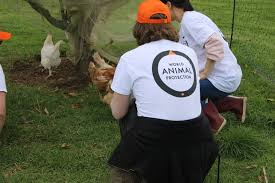

Projetos Sociais
Conheça os projetos que estão transformando vidas e promovendo o bem-estar animal.
Voluntariado
Descubra como você pode se tornar voluntário e fazer parte da nossa missão.
Quero ser voluntárioDoações
Ajude a manter nossos projetos ativos. Toda contribuição faz a diferença!
Doar pelo PagSeguro Doar pelo PayPal